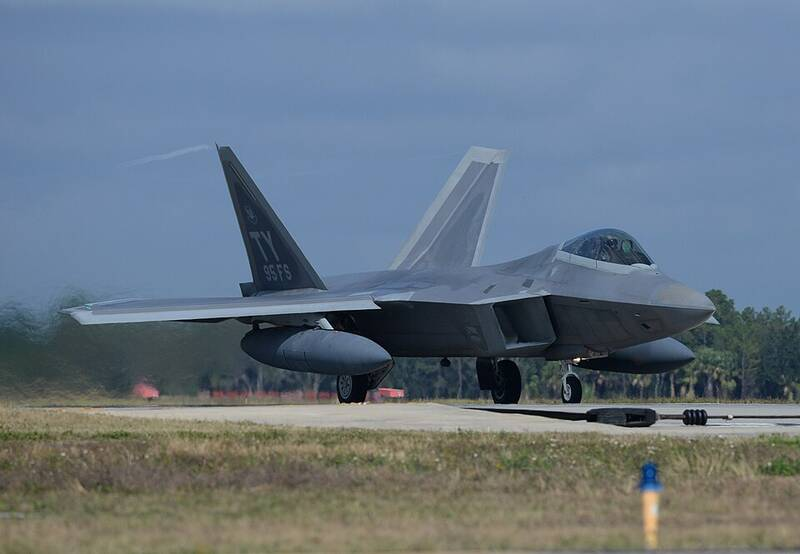

Tyndall AFB Florida Florida · Military base · 30.072°N, 85.578°W An F-22 Raptor taking off at Tyndall, 2015. Photo: Airman 1st Class Sergio Gamboa, U.S. Air Force, Public domain (source) Air Force fighter base on the Gulf Coast. 1 Open in the interactive Watcher Sources Tyndall Air Force Base Wikipedia